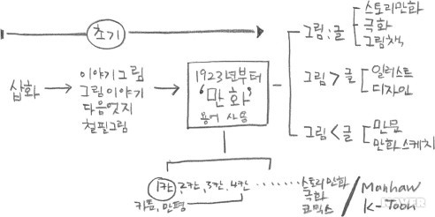
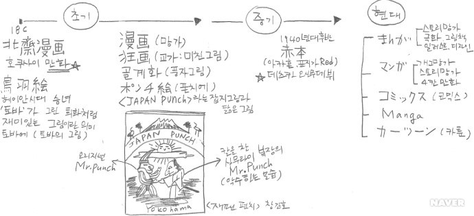
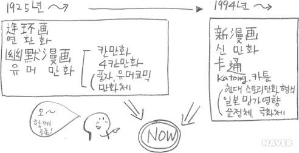

한국, 일본, 중국에서 사용하는 공통어인 만화의 한자 ‘漫畵’를 풀어보면, 漫자는 ‘생각나는 대로, 함부로, 멋대로’라는 의미를 가지고 있고, 畵는 ‘그리다’라는 의미를 가진다. 이 두 개의 글자를 합쳐보면, 생각나는 대로 그린 그림, 함부로 그린 그림, 멋대로 그린그림이라고 해석할 수 있고 좀 더 확대해보면, ‘맘대로 자유롭게 그린 그림’이라고 할 수 있다.
어린 시절부터 만화는 우리에게 매우 익숙한 단어였다. 하지만 ‘만화’라는 말을 영어로 바꾼다면 어떻게 표현할 수 있을까? 영어권에서 사용하는 카툰(cartoon)이란 단어를 떠올리면, 우리에게 카툰은 한 컷이나 네 컷 이하의 짧은 그림, 또는 의미를 담고 있는 풍자그림처럼 일반적으로 신문에 실리는 시사만화나 만평 등을 가리키므로, 뭔가 한쪽에 치우친 느낌을 받는다. 그럼, 코믹스(comics)라는 단어는 어떨까? 코믹스는 주로 단행본이나 월간 잡지에 연재되는 스토리를 갖춘 만화에 더 적합할 것 같은 느낌이 들어 만화 전체를 가리키는 단어로는 한계가 있다.
최근 국제무대에서 우리 만화는 Manhwa라는 로마자 표기를 사용하여 대한민국 만화임을 알리고 있으며, K-POP처럼 K-Toon(Korea Cartoon)이란 신조어도 생겨나고 있지만 이런 단어들은 단지 한국만화를 지칭하는 고유명사일 뿐 우리 만화에 대응하는 영어표현과는 그 성격이 다르다. 한국에는 오래전부터 희화적이거나 풍자적인 그림을 부르는 다양한 표현들이 존재했었다. ‘만화’라는 단어는 1920년대에 일본에서 전해져 동아일보에 독자만화(讀者漫畵)라는 말로 처음 매체에 등장하면서 보편적으로 사용되기 시작하였다.
일본의 경우, 만화는 오랫동안 漫画라는 한자어로 표기되어 왔는데 지금은 한자어인 漫画와 히라가나 표기인 まんが, 가타가나 표기인 マンガ, 대외적으로 일본만화를 가리키는 영어표현인 Manga가 혼합되어 사용된다. 만화비평가 나츠메 후사노스케(夏目房之介)는 이런 용어 사용의 구분에 대해, 일반적으로 한자 漫画는 메이지시대부터 세계대전 이전까지 그려졌던 오래된 풍자만화, 어린이 만화라는 이미지가 있고, 현재 대량으로 유통되는 이야기만화와 네 컷 만화, 개그만화 등은 총칭해서 가타가나인 マンガ로 표기하는 경향이 있다고 했다.
또한, コミック(코믹)은 주로 잡지에 연재하는 스토리만화를 의미하는데, 1970년대 출판사 소학관(小學館)이 상업적으로 그 호칭을 유통시키면서 네 컷 만화 등은 포함하지 않는 좁은 의미의 만화를 가리키는 단어가 되었다1)고 한다. 그렇다면, 일본에서 만화라는 용어의 유래는 무엇일까? 에도시대의 대표적인 화가였던 가츠시카 호쿠사이는 1814년부터 1878년 사이에 그린 4000여 장의 그림을 모아 총 15권으로 《호쿠사이 망가(北齋漫画)》를 발표했는데, 그때 제목으로 漫画가 처음으로 사용되었다. 그 후 망가는 호칭의 유행에 따라 토바에, 폰치에, 아카혼, 스토리망가, 극화, 코믹 등으로 불리게 되었다.
중국에서 만화라는 말은 1920년대 중반 일본 유학에서 돌아온 펑즈가이가 자신의 그림에 만후아(漫画, Mànhuà)라는 말을 쓰면서 처음 사용되었다. 일본만화와 한국만화가 한 뿌리를 통하여 순차적으로 발전하면서 세분화된 것과 달리 중국의 만화는 그 종류에 따라 각기 다른 뿌리와 태생을 가진다. 중국 전통회화형식인 연환화, 즉 리옌환후아(连环画, liánhuánhuà)는 연속적인 이야기를 가진 문학과 회화가 결합된 형식을 가지며 유머만화는 영어 유머(humor)의 중국식 표기인 유모어(幽默, yōumò)로 표기하며 신문만화에 뿌리를 두고 있다.
최근에는 기존의 만후아와 별도로 일본 망가의 영향을 받은 새로운 스타일의 만화를 카통(Cartoon의 중국식 표기인 卡通(kǎtōng))이라고 구분하여 칭하고 있다. 카통은 다시 신만화, 신형만화, 고사만화 등의 다양한 명칭으로 불리고 있는데, 작가의 사상과 감정, 사회와 인생에 대한 인식이 표현된 만화라는 점에서 이전의 만후아와 차별화된 성격을 가진다. 현재는 이러한 신만화가 대세지만 중국만화 시장의 경우, 자국의 경쟁력을 갖는 전통적인 유머만화와 시대적 경향으로 조금 밀리는 연환화도 함께 만화 시장에 병존하고 있는 것이 큰 특징이다.
전혀 다른 성격의 중국만화 잡지 《유머대사》와 《북경카통》 표지에 그려진 이미지로부터 각 만화 스타일의 차이를 볼 수 있다.(*幽默 : 유머 Humor, 卡通 : 카툰 cartoon, 大结局 : 대결말)